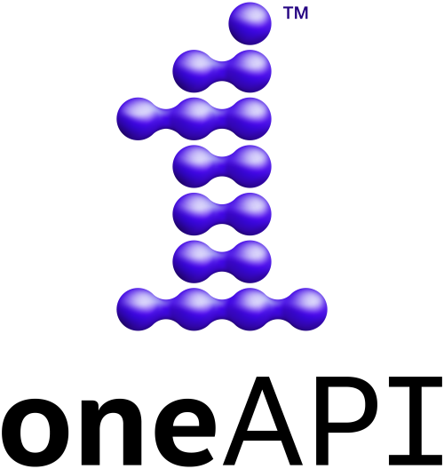

SYCL and the SYCL logo are trademarks of the Khronos Group Inc.
oneAPI Math Library (oneMath)
## Do you need to write your own kernels?
* Many computationally intensive applications spend the most of their time in **common operations / algorithms**
* **Numerical libraries** provide reliable solutions to these common problems
* You can focus on solving higher-level problems instead of technical details
* Libraries optimised for specific hardware provide **superior performance**
## Numerical libraries
* Common APIs like BLAS or LAPACK have multiple CPU implementations and vendor-specific GPU solutions
* **Intel CPU/GPU**: Intel Math Kernels Library (oneMKL)
* **NVIDIA GPU**: cuBLAS, cuSOLVER, cuRAND, cuFFT
* **AMD GPU**: rocBLAS, rocSOLVER, rocRAND, rocFFT
* Imagine being able to use all of them with *single source code* → **oneMath**
oneAPI and oneMath
* Open-source [**oneAPI**](https://oneapi.io/) project governed by the [United Acceleration (UXL) Foundation](https://uxlfoundation.org/):
* defines SYCL-based APIs and provides library implementations
* brings performance and ease of development to SYCL applications
* [**oneMath** specification](https://oneapi-spec.uxlfoundation.org/specifications/oneapi/latest/elements/onemath/source/):
* defines SYCL API for numerical computations across several domains
* Linear Algebra, Discrete Fourier Transforms, Random Number Generators, Statistics, Vector Math
* [**oneMath** library](https://github.com/uxlfoundation/oneMath):
* wrapper implementation dispatching SYCL API calls to a multitude of implementations, both generic and vendor-specific

oneMath library backends
#### Run-time dispatching
#include <oneapi/math.hpp>
sycl::queue q{myDeviceSelector};
sycl::buffer<T,1> a{a_host, m*k};
sycl::buffer<T,1> b{b_host, k*n};
sycl::buffer<T,1> c{c_host, m*n};
// Compute C = A*B+C on the device
oneapi::math::blas::column_major::gemm(q, ..., m, n, k, ..., a, ..., b, ..., c, ... );
* Backend is loaded at run time based on the device associated with the SYCL queue
* Both buffer and USM APIs available (mind the different synchronisation)
* The same binary can run on different hardware with a generic device selector
* Can run on CPU or different GPUs without recompiling
* Link the application with the top-level runtime library: `-lonemath`
#### Compile-time dispatching
#include <oneapi/math.hpp>
sycl::queue cpu_queue{sycl::cpu_selector_v};
sycl::buffer<T,1> a{a_host, m*k};
sycl::buffer<T,1> b{b_host, k*n};
sycl::buffer<T,1> c{c_host, m*n};
oneapi::math::backend_selector<oneapi::math::backend::mklcpu> cpu_selector(cpu_queue);
// Select the Intel oneMKL CPU backend specifically ^^^^^^
oneapi::math::blas::column_major::gemm(cpu_selector, ..., m, n, k, ..., a, ..., b, ..., c, ... );
* Specific backend can be selected at compile-time with a `backend_selector`
* Passed into the API in place of the queue
* Reduces the small dispatching overhead at the cost of removed portability
* Link the application with the specific backend library: `-lonemath_blas_mklcpu`
## Exercise
* Objectives: Learn to use oneMath GEMM buffer and USM APIs
* Boiler-plate code already provided to:
* Initialize matrices on host
* Compute reference result on host
* Compare the host and device results
* Please **complete the TODO tasks** marked in the `source_*.cpp`
* Create buffers or transfer data with USM
* Compute GEMM by calling the oneMath API
* Use the provided `VerifyResult` function
* If stuck, have a look at `solution_*.cpp`